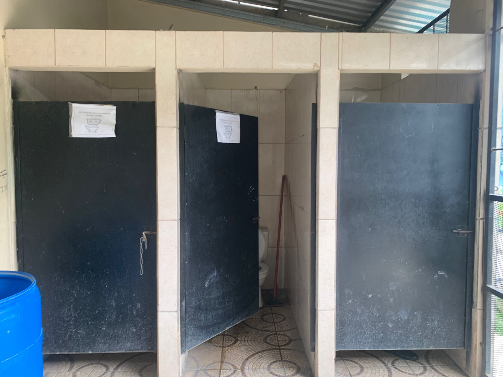
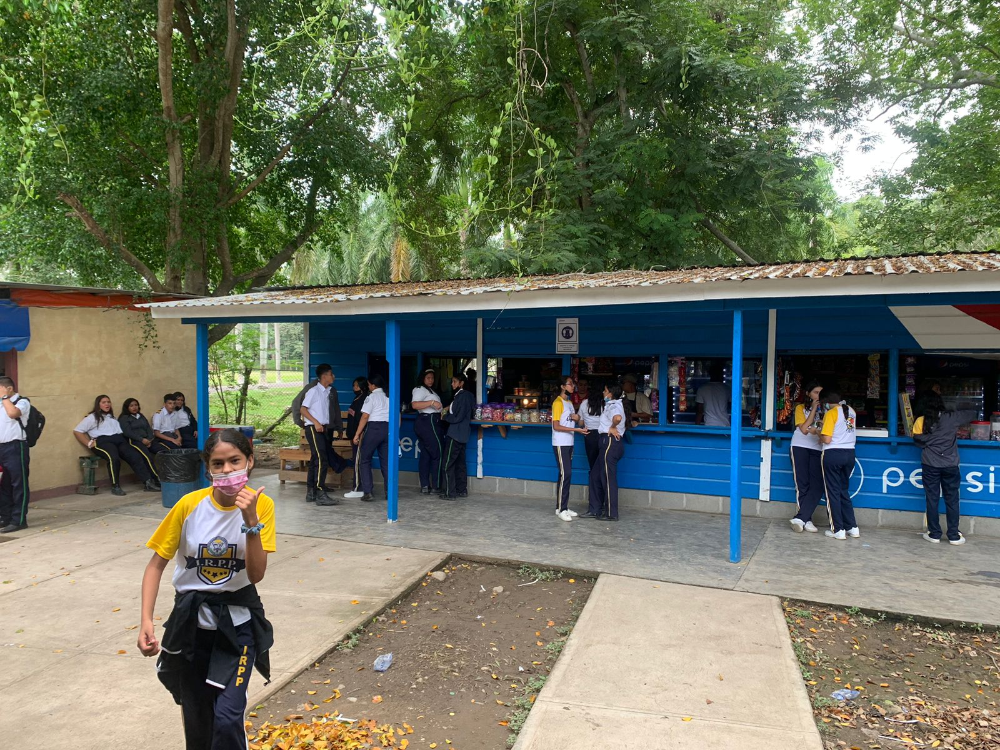
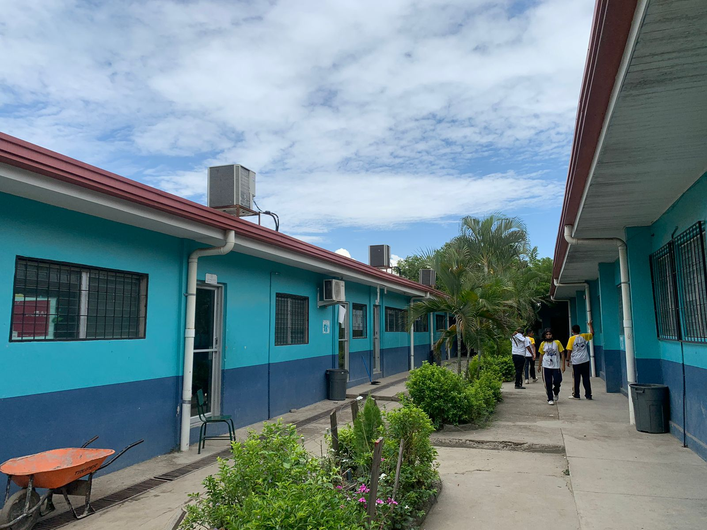
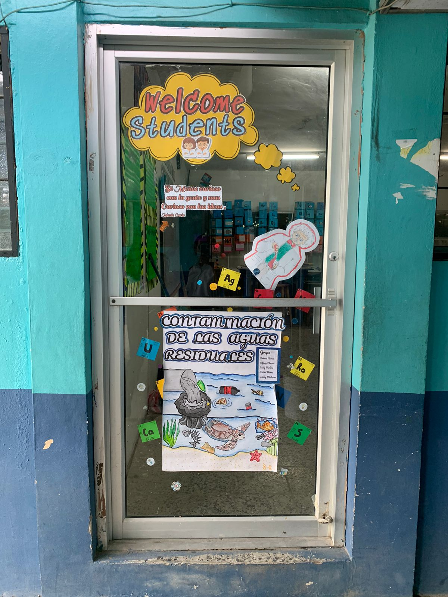
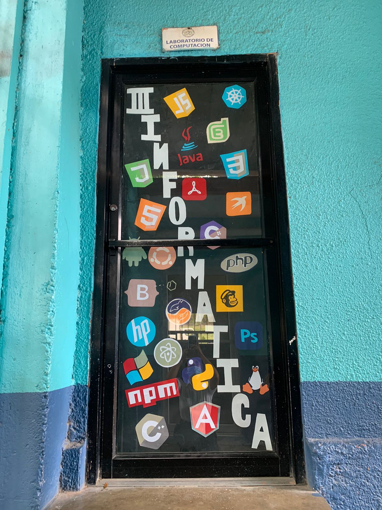

Seguridad militar en todas las jornadas
Tu seguridad es nuestra prioridad, por lo que en cada jornada escolar, encontrarás una presencia de seguridad militar que garantiza un ambiente protegido y propicio para el aprendizaje.

Baños para señoritas y varones
Nuestras instalaciones están equipadas pensando en tu comodidad y bienestar. Los baños modernos y limpios están disponibles en todo momento, brindándote un espacio higiénico y cómodo para tus necesidades diarias.

Cafeterias
Para satisfacer tus necesidades alimenticias, nuestras cafeterías ofrecen opciones deliciosas y nutritivas. Aquí puedes disfrutar de una variedad de alimentos que te mantendrán energizado durante el día escolar.

Todas las aulas climatizadas
mNuestras aulas climatizadas crean un ambiente de aprendizaje óptimo en todas las estaciones. Ya sea en los meses más cálidos o durante el frío invierno, nuestras instalaciones garantizan que te encuentres en un entorno propicio para concentrarte en tus estudios.

Laboratorio cientifico
Explora el mundo digital en nuestro moderno laboratorio informático. Equipado con tecnología de vanguardia, este espacio te brinda la oportunidad de sumergirte en el vasto campo de la informática.

Laboratorio informatico
Descubre el mundo de la ciencia en nuestro laboratorio especialmente diseñado para la exploración y el descubrimiento. Equipado con instrumentos de precisión y materiales de laboratorio de alta calidad, este espacio es el lugar donde la teoría cobra vida. Desde experimentos químicos hasta investigaciones biológicas, aquí podrás participar en actividades prácticas que refuerzan tus conocimientos en ciencias.